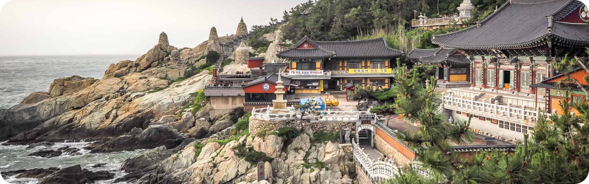
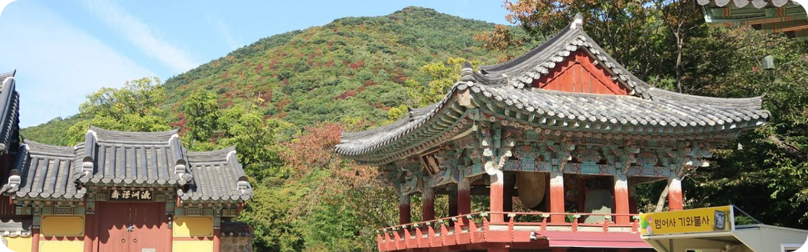
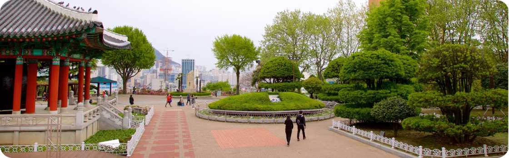

1. Templo Haedong Yonggungsa
O Templo Haedong Yonggungsa é um templo budista localizado no extremo nordeste de Busan.
Construído
em 1376, é um dos poucos templos na Coreia construídos à beira-mar – você pode desfrutar de
vistas
do Mar do Leste de um lado e de belas montanhas do outro.
Bom para:

2. Templo Beomeo-sa
O Templo Beomeo-sa é um dos maiores santuários da Coreia do Sul. Ele está localizado no alto da
borda
leste da montanha Geumjeongsa e fica distante da agitação da cidade. O Daeungjeon Hall do templo
é
um exemplo bem preservado da arquitetura da Dinastia Joseon.
Bom para:

3. Parque Yongdusan
O Parque Yongdusan, localizado no centro de Busan, abriga alguns dos monumentos mais importantes
da
cidade. Você pode ver vistas espetaculares do topo da Torre Busan, de 120 metros de altura. O
parque
tem 2 museus – confira os instrumentos musicais tradicionais no Museum of World Folk Instruments
e
mais de 80 veleiros coreanos no Exhibition Hall of World Model Boats.
Bom para:
- Casais
- Famílias
- Orçamento